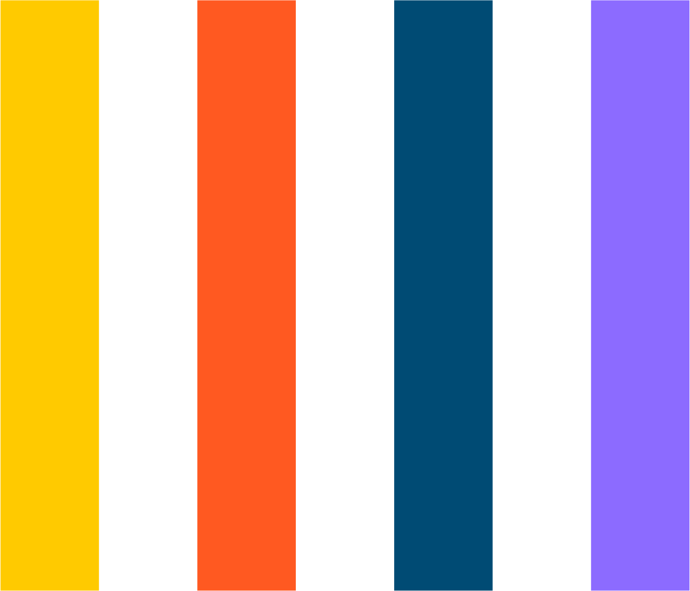

Ações que auxiliam no controle da doença em unidades prisionais
Vejamos algumas ações que auxiliam no controle dos casos no sistema prisional:
- suspensão e/ou redução de visitas familiares até a cessação da pandemia, abrindo a possibilidade de visitas virtuais, sempre que possível;
- possibilidade de entrega de cartas nas unidades prisionais em dias e horários definidos;
- destinação de celas exclusivas para pessoas presas sintomáticas;